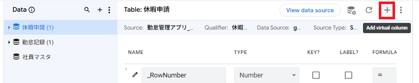
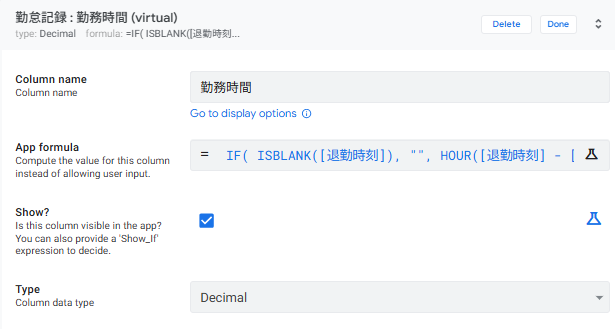
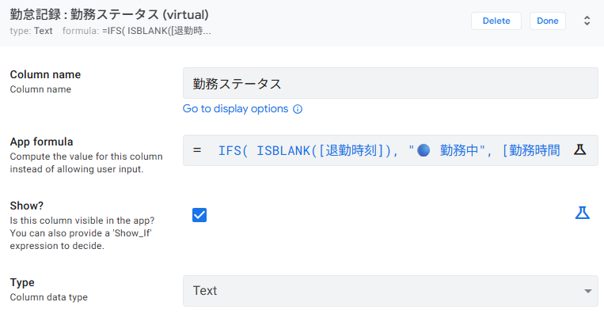
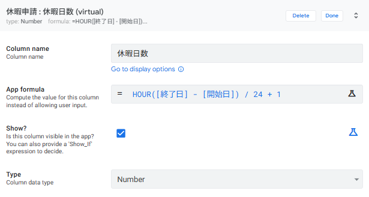
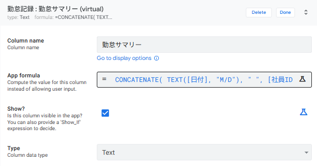

関数を使いこなそう
5-1 Virtual Column と App formula の基本
AppSheet の Virtual Column（仮想カラム） は、スプレッドシート上には存在しない「計算用のカラム」です。App formula（アプリ数式）を設定すると、データが表示されるたびに自動で計算結果が生成されます。
■ Virtual Column の仕組み
などの生データ
（例：時間差）
アプリ上に自動表示
■ Virtual Column の追加手順（共通）
この章では何度も Virtual Column を追加するため、共通の手順をここでまとめます。
左メニューの Data → 対象テーブルを選択します。
カラム一覧の右上にある 「＋」（Add virtual column） をクリックします。
Column name（カラム名）を入力し、App formula に関数式を入力します。
TYPE を適切な型に設定し、Done → Save で保存します。

Virtual Column：スプレッドシートには保存されず、アプリ上でのみ計算・表示される。ユーザーは編集不可。
計算結果や判定結果など「入力するのではなく自動で決まる値」には Virtual Column を使います。
5-2 勤務時間を自動計算する（HOUR / MINUTE）
勤怠記録テーブルに Virtual Column「勤務時間」を追加し、出勤時刻と退勤時刻の差を自動計算します。
■ 設定内容
| 項目 | 設定値 |
|---|---|
| テーブル | 勤怠記録 |
| Column name | 勤務時間 |
| TYPE | Decimal |
| App formula | （下記参照） |
■ App formula
IF(
ISBLANK([退勤時刻]),
"",
HOUR([退勤時刻] - [出勤時刻]) + MINUTE([退勤時刻] - [出勤時刻]) / 60
)■ 式の解説
| パーツ | 意味 |
|---|---|
ISBLANK([退勤時刻]) | 退勤時刻が空欄かどうかを判定（勤務中の場合） |
HOUR([退勤時刻] - [出勤時刻]) | 時刻の差から「時間」部分を取得 |
MINUTE(...) / 60 | 「分」部分を小数に変換（例：30分 → 0.5） |
HOUR + MINUTE/60 | 合算して「8.5」のような小数時間を算出 |
Data → 勤怠記録 → カラム一覧右上の 「＋」 をクリックして Virtual Column を追加します。
Column name に「勤務時間」、App formula に上記の式を入力します。
TYPE を Decimal に設定し、Done → Save で保存します。

ISBLANK([退勤時刻]) が TRUE の場合（まだ勤務中）、式は空文字 "" を返します。これにより、勤務中のレコードでは勤務時間が空欄で表示されます。
5-3 勤務ステータスを判定する（IF / IFS）
勤怠記録テーブルに Virtual Column「勤務ステータス」を追加し、退勤時刻の有無や勤務時間に応じて自動でステータスを表示します。
■ 設定内容
| 項目 | 設定値 |
|---|---|
| テーブル | 勤怠記録 |
| Column name | 勤務ステータス |
| TYPE | Text |
| App formula | （下記参照） |
■ App formula
IFS(
ISBLANK([退勤時刻]), "🔵 勤務中",
[勤務時間] >= 9, "🔴 残業あり",
[勤務時間] >= 8, "🟢 通常勤務",
TRUE, "🟡 時短勤務"
)■ 式の解説
| 条件 | 結果 | 説明 |
|---|---|---|
ISBLANK([退勤時刻]) | 🔵 勤務中 | 退勤時刻が未入力 → まだ勤務中 |
[勤務時間] >= 9 | 🔴 残業あり | 9時間以上 → 残業あり |
[勤務時間] >= 8 | 🟢 通常勤務 | 8〜9時間未満 → 通常勤務 |
TRUE | 🟡 時短勤務 | 上記以外（8時間未満） → 時短勤務 |
勤怠記録 テーブルに Virtual Column 「勤務ステータス」 を追加します。
App formula に上記の IFS 式を入力、TYPE を Text に設定します。
Done → Save で保存します。

IFS(条件1, 結果1, 条件2, 結果2, ...)：条件が複数ある場合に使用。上から順に評価され、最初に TRUE になった条件の結果を返します。最後の
TRUE は「どの条件にも当てはまらない場合」のデフォルト値です。
[勤務時間] として参照しています。Virtual Column 同士を参照することも可能です。ただし、参照先の Virtual Column が先に定義されている必要があります。
5-4 休暇日数を自動計算する
休暇申請テーブルに Virtual Column「休暇日数」を追加し、開始日と終了日の差から申請日数を自動計算します。
■ 設定内容
| 項目 | 設定値 |
|---|---|
| テーブル | 休暇申請 |
| Column name | 休暇日数 |
| TYPE | Number |
| App formula | （下記参照） |
■ App formula
HOUR([終了日] - [開始日]) / 24 + 1[終了日] - [開始日] は Duration 型（期間）を返します。HOUR() で総時間数を取得し、24 で割ることで日数に変換します。+ 1 は当日を含めるための補正です（4/10〜4/10 = 1日）。
休暇申請 テーブルに Virtual Column 「休暇日数」 を追加します。
App formula に HOUR([終了日] - [開始日]) / 24 + 1 を入力、TYPE を Number に設定します。
Done → Save で保存します。

HOUR() で総時間数を取得し、24 で割って日数に変換します。DAY() は Date 型から「日」の部分を取り出す関数であり、Duration には使えないので注意してください。
5-5 表示テキストを整形する（TEXT / CONCATENATE）
勤怠記録テーブルに Virtual Column「勤怠サマリー」を追加し、日付・社員名・勤務時間を1行にまとめた見やすいテキストを自動生成します。
■ 設定内容
| 項目 | 設定値 |
|---|---|
| テーブル | 勤怠記録 |
| Column name | 勤怠サマリー |
| TYPE | Text |
| App formula | （下記参照） |
■ App formula
CONCATENATE(
TEXT([日付], "M/D"),
" ",
[社員ID].[氏名],
" ",
IF(ISBLANK([退勤時刻]), "勤務中", CONCATENATE([勤務時間], "h"))
)表示結果の例：「4/1 田中太郎 8.5h」 または 「4/2 鈴木一郎 勤務中」
■ 式の解説
| パーツ | 意味 |
|---|---|
TEXT([日付], "M/D") | 日付を「4/1」形式にフォーマット |
[社員ID].[氏名] | Ref で参照している社員マスタの氏名を取得 |
CONCATENATE(...) | 複数のテキストを結合して1つの文字列にする |
IF(ISBLANK(...)) | 退勤時刻が空なら「勤務中」、あれば「8.5h」を表示 |
勤怠記録 テーブルに Virtual Column 「勤怠サマリー」 を追加します。
App formula に上記の式を入力、TYPE を Text に設定します。
Done → Save で保存します。

[Refカラム名].[参照先カラム名] の形式でアクセスできます。これは AppSheet のデリファレンス（Dereference）と呼ばれる仕組みで、リレーションを張ったテーブルの情報を簡単に取得できます。
■ この章で使った関数リファレンス
| 関数 | 説明 | 使用例 |
|---|---|---|
HOUR() |
Duration から時間部分を取得 | HOUR([退勤時刻] - [出勤時刻]) |
MINUTE() |
Duration から分部分を取得 | MINUTE([退勤時刻] - [出勤時刻]) |
IF() |
条件分岐（二択） | IF(ISBLANK([退勤時刻]), "", ...) |
IFS() |
条件分岐（複数条件） | IFS(条件1, 結果1, 条件2, 結果2, ...) |
ISBLANK() |
値が空欄かどうかを判定 | ISBLANK([退勤時刻]) |
TEXT() |
値を指定フォーマットの文字列に変換 | TEXT([日付], "M/D") |
CONCATENATE() |
複数のテキストを結合 | CONCATENATE("A", " ", "B") |
5-6 動作確認とまとめ
すべての Virtual Column の設定が完了しました。プレビュー画面で各設定が正しく動作するか確認しましょう。
■ 確認チェックリスト
- 勤怠記録：「勤務時間」に小数の時間数（例：8.5）が表示されているか
- 勤怠記録：退勤時刻が空のレコードで「勤務時間」が空欄になっているか
- 勤怠記録：「勤務ステータス」に 🔵🟢🔴🟡 のいずれかが表示されているか
- 勤怠記録：退勤時刻が空のレコードで「🔵 勤務中」と表示されているか
- 休暇申請：「休暇日数」に正しい日数（例：1日、2日）が表示されているか
- 勤怠記録：「勤怠サマリー」に「4/1 田中太郎 8.5h」のような文字列が表示されているか
■ この章で作成した Virtual Column 一覧
| テーブル | カラム名 | TYPE | App formula（概要） |
|---|---|---|---|
| 勤怠記録 | 勤務時間 | Decimal | HOUR() + MINUTE()/60（退勤時刻が空なら空欄） |
| 勤怠記録 | 勤務ステータス | Text | IFS() で勤務中 / 残業 / 通常 / 時短を判定 |
| 休暇申請 | 休暇日数 | Number | [終了日] - [開始日] + 1 |
| 勤怠記録 | 勤怠サマリー | Text | CONCATENATE() + TEXT() でテキスト整形 |
■ 第5章のまとめ
| No. | やったこと | ポイント |
|---|---|---|
| 1 | Virtual Column の基本を理解 | スプレッドシートに保存されない計算用カラム |
| 2 | 勤務時間の自動計算 | HOUR() + MINUTE()/60 で小数時間を算出 |
| 3 | 勤務ステータスの自動判定 | IFS() で複数条件の分岐処理 |
| 4 | 休暇日数の自動計算 | HOUR() で Duration → 時間に変換し、/24 で日数を算出 |
| 5 | 表示テキストの整形 | CONCATENATE() + TEXT() + デリファレンス |